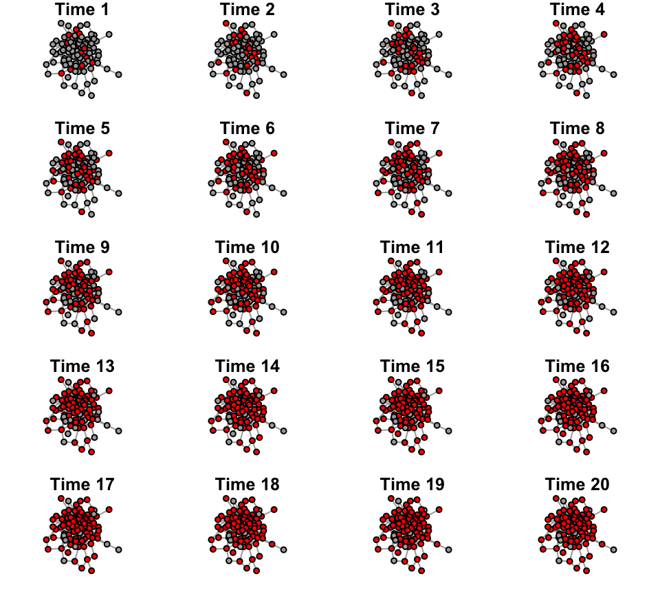

- Intro to Diffusion on Networks
Dai Shizuka
7/12/2018
Packages you will need for this tutorial:
library(igraph)11.1 Diffusion/Flow/Transmission through a network
One of the assumptions of network theory is that the connections between elements in a system matter to the function/property of the system and/or the individual elements within the system. One way in which such connections matters is that they can facilitate the flow of something through this system. Some examples include:
- Electricity through an electric grid
- Bits of information through the internet
- Vehicles/individuals moving through a transportation network
- Information through social networks
- Disease through contact networks
- Modification of social strategies through competition networks
One of the classical theories on social spread is that the accumulation of individuals (nodes) that take on a new state (e.g., an innovation) takes on different pattern when the spread is due to asocial processes (e.g., everyone innovates on their own) versus social processes (e.g., innovation spreads through social transmission).
Figure showing classical predictions of asocial versus social spread of innovations. From Franz & Nunn (2009).
Here, let’s explore this paradigm by actually simulating the spread of innovation due to asocial or social processes.
11.2 Simulation of asocial changes in state (e.g., asocial learning)
Let’s first consider a situation where each individual in a social network has an inherent probability to adopt the innovation at any given time.
First, we will make a random graph consisting of 100 nodes. We will set the initial ‘innovation adoption’ status for all individuals (all initially 0).
set.seed(4)
n=100
g=erdos.renyi.game(n, p=0.05)
V(g)$status=0 #the 'innovation adoption status' for each individual. All initially 0.Let’s plot this random graph. While we’re at it, we will save the layout so that we can use it for all the plots of this network later.
l=layout_with_fr(g)
plot(g, vertex.label="", vertex.size=8, vertex.color="darkgray", layout=l)Now, we will set the ‘asocial learning’ parameter, \(x\) to be 0.1. This is the probability that any given individual will come up with the innovation–e.g., how to forage for a new prey item.
x=0.1Let’s run one practice run of how this will work. In one time step, we flip a coin for each individual whether or not they will adopt the innovation. Based on the coin flip, we will convert the status of the individual to 1 if they learned the innovation in that time step:
adopt=sample(c(1,0),n, prob=c(x, 1-x), replace=T) #based on the probabilities, flip a coin and determine if the individual adopted or not.
V(g)$status[which(adopt==1)]=1 #change status of new adopters adopt.list[[j]]=which(adopters==1) #save the identities of adopters for that time step
plot(g, vertex.label="", vertex.color=c("darkgray", "red")[V(g)$status+1], vertex.size=8, layout=l)
Now, we will repeat this simulation for 20 time steps. Here, we need to consider that any given individual can only adopt an innovation once (it can’t go back). If you’re thinking about this in terms of disease, it’s like an ‘SI model’ in which individuals do not recover or go back to a susceptible state. In practical terms, this means that we will just ignore coin flips for individuals whose status = 1.
t=20
adopt.list=list(0) #empty list t=20
g.time=list()
for(j in 1:t){
adopt=sample(c(1,0), n, prob=c(x, 1-x), replace=T) #coin flip
V(g)$status[which(adopt==1)]=1
g.time[[j]]=g
}sapply(g.time, function(x) V(x)$status)## [,1] [,2] [,3] [,4] [,5] [,6] [,7] [,8] [,9] [,10] [,11] [,12]
## [1,] 0 1 1 1 1 1 1 1 1 1 1 1
## [2,] 0 0 0 0 0 1 1 1 1 1 1 1
## [3,] 1 1 1 1 1 1 1 1 1 1 1 1
## [4,] 0 0 0 0 0 0 0 0 0 0 0 0
## [5,] 0 1 1 1 1 1 1 1 1 1 1 1
## [6,] 0 1 1 1 1 1 1 1 1 1 1 1
## [7,] 0 0 0 0 0 0 0 1 1 1 1 1
## [8,] 0 0 0 0 0 1 1 1 1 1 1 1
## [9,] 0 0 0 0 0 0 0 0 0 0 0 0
## [10,] 1 1 1 1 1 1 1 1 1 1 1 1
## [11,] 0 0 0 0 0 0 0 0 0 0 0 0
## [12,] 0 0 0 0 0 0 0 0 0 0 0 0
## [13,] 0 0 0 0 0 0 0 0 0 0 0 0
## [14,] 0 0 0 0 1 1 1 1 1 1 1 1
## [15,] 0 0 0 0 0 0 0 0 0 0 1 1
## [16,] 0 0 0 0 0 0 0 0 0 0 0 0
## [17,] 0 0 0 0 0 1 1 1 1 1 1 1
## [18,] 0 0 0 0 0 0 0 0 0 0 0 0
## [19,] 0 0 0 0 1 1 1 1 1 1 1 1
## [20,] 1 1 1 1 1 1 1 1 1 1 1 1
## [21,] 0 0 0 0 0 0 0 0 1 1 1 1
## [22,] 1 1 1 1 1 1 1 1 1 1 1 1
## [23,] 0 0 0 0 0 0 0 0 0 0 1 1
## [24,] 0 0 0 1 1 1 1 1 1 1 1 1
## [25,] 1 1 1 1 1 1 1 1 1 1 1 1
## [26,] 0 0 0 0 1 1 1 1 1 1 1 1
## [27,] 0 0 0 0 0 0 0 0 0 0 1 1
## [28,] 0 0 0 0 0 0 1 1 1 1 1 1
## [29,] 1 1 1 1 1 1 1 1 1 1 1 1
## [30,] 0 0 0 0 0 0 0 0 0 0 0 1
## [31,] 0 0 0 0 0 1 1 1 1 1 1 1
## [32,] 0 0 0 0 0 1 1 1 1 1 1 1
## [33,] 1 1 1 1 1 1 1 1 1 1 1 1
## [34,] 0 1 1 1 1 1 1 1 1 1 1 1
## [35,] 0 0 0 1 1 1 1 1 1 1 1 1
## [36,] 0 0 0 0 1 1 1 1 1 1 1 1
## [37,] 0 0 0 0 0 0 0 0 0 0 1 1
## [38,] 0 0 1 1 1 1 1 1 1 1 1 1
## [39,] 0 1 1 1 1 1 1 1 1 1 1 1
## [40,] 0 0 0 0 1 1 1 1 1 1 1 1
## [41,] 1 1 1 1 1 1 1 1 1 1 1 1
## [42,] 0 0 0 0 0 0 0 0 0 0 0 0
## [43,] 0 0 0 0 0 0 0 0 0 0 0 0
## [44,] 1 1 1 1 1 1 1 1 1 1 1 1
## [45,] 0 0 0 0 0 0 0 0 0 0 0 0
## [46,] 1 1 1 1 1 1 1 1 1 1 1 1
## [47,] 0 0 0 0 0 0 0 0 0 0 0 0
## [48,] 1 1 1 1 1 1 1 1 1 1 1 1
## [49,] 0 0 0 0 0 0 0 0 0 0 1 1
## [50,] 0 0 0 0 0 0 0 0 0 0 0 0
## [51,] 0 0 1 1 1 1 1 1 1 1 1 1
## [52,] 0 0 0 0 0 0 0 0 0 1 1 1
## [53,] 1 1 1 1 1 1 1 1 1 1 1 1
## [54,] 0 1 1 1 1 1 1 1 1 1 1 1
## [55,] 0 0 0 0 0 0 0 0 0 0 0 0
## [56,] 0 0 0 1 1 1 1 1 1 1 1 1
## [57,] 0 0 0 0 0 0 1 1 1 1 1 1
## [58,] 1 1 1 1 1 1 1 1 1 1 1 1
## [59,] 0 0 0 0 0 0 0 0 0 0 0 0
## [60,] 0 0 0 0 0 0 1 1 1 1 1 1
## [61,] 0 0 0 0 0 0 0 0 0 0 0 0
## [62,] 0 0 0 0 0 0 1 1 1 1 1 1
## [63,] 0 0 0 0 0 0 0 0 0 0 0 0
## [64,] 0 0 0 0 0 0 0 0 0 0 0 0
## [65,] 1 1 1 1 1 1 1 1 1 1 1 1
## [66,] 0 1 1 1 1 1 1 1 1 1 1 1
## [67,] 1 1 1 1 1 1 1 1 1 1 1 1
## [68,] 0 0 0 0 0 0 0 0 0 0 0 0
## [69,] 0 1 1 1 1 1 1 1 1 1 1 1
## [70,] 0 0 0 0 0 0 0 0 0 0 0 1
## [71,] 0 0 0 0 0 0 1 1 1 1 1 1
## [72,] 0 0 0 0 0 0 0 0 1 1 1 1
## [73,] 0 0 0 0 0 0 0 0 0 0 1 1
## [74,] 0 0 0 0 0 0 0 0 0 0 0 0
## [75,] 0 0 0 0 0 0 0 0 0 0 0 0
## [76,] 1 1 1 1 1 1 1 1 1 1 1 1
## [77,] 0 0 0 0 1 1 1 1 1 1 1 1
## [78,] 0 0 0 0 0 0 0 0 0 0 0 0
## [79,] 1 1 1 1 1 1 1 1 1 1 1 1
## [80,] 1 1 1 1 1 1 1 1 1 1 1 1
## [81,] 1 1 1 1 1 1 1 1 1 1 1 1
## [82,] 0 0 1 1 1 1 1 1 1 1 1 1
## [83,] 0 0 0 0 0 0 1 1 1 1 1 1
## [84,] 0 1 1 1 1 1 1 1 1 1 1 1
## [85,] 0 0 0 0 0 0 1 1 1 1 1 1
## [86,] 0 0 0 0 0 0 0 0 0 0 0 1
## [87,] 0 0 0 0 0 0 0 0 0 0 0 0
## [88,] 0 0 0 1 1 1 1 1 1 1 1 1
## [89,] 0 0 0 0 0 0 1 1 1 1 1 1
## [90,] 0 0 0 0 0 0 0 0 0 0 0 0
## [91,] 0 0 0 0 0 0 1 1 1 1 1 1
## [92,] 0 0 0 0 0 0 0 0 0 0 0 0
## [93,] 0 0 0 1 1 1 1 1 1 1 1 1
## [94,] 0 0 0 0 0 0 0 0 0 0 0 1
## [95,] 0 0 0 0 0 0 0 0 0 0 1 1
## [96,] 1 1 1 1 1 1 1 1 1 1 1 1
## [97,] 0 0 1 1 1 1 1 1 1 1 1 1
## [98,] 0 0 0 0 0 0 0 0 0 0 0 0
## [99,] 1 1 1 1 1 1 1 1 1 1 1 1
## [100,] 0 0 1 1 1 1 1 1 1 1 1 1
## [,13] [,14] [,15] [,16] [,17] [,18] [,19] [,20]
## [1,] 1 1 1 1 1 1 1 1
## [2,] 1 1 1 1 1 1 1 1
## [3,] 1 1 1 1 1 1 1 1
## [4,] 0 0 1 1 1 1 1 1
## [5,] 1 1 1 1 1 1 1 1
## [6,] 1 1 1 1 1 1 1 1
## [7,] 1 1 1 1 1 1 1 1
## [8,] 1 1 1 1 1 1 1 1
## [9,] 0 0 0 0 1 1 1 1
## [10,] 1 1 1 1 1 1 1 1
## [11,] 0 0 0 0 0 0 0 0
## [12,] 0 0 0 0 0 0 0 0
## [13,] 1 1 1 1 1 1 1 1
## [14,] 1 1 1 1 1 1 1 1
## [15,] 1 1 1 1 1 1 1 1
## [16,] 0 1 1 1 1 1 1 1
## [17,] 1 1 1 1 1 1 1 1
## [18,] 0 0 0 0 0 0 0 0
## [19,] 1 1 1 1 1 1 1 1
## [20,] 1 1 1 1 1 1 1 1
## [21,] 1 1 1 1 1 1 1 1
## [22,] 1 1 1 1 1 1 1 1
## [23,] 1 1 1 1 1 1 1 1
## [24,] 1 1 1 1 1 1 1 1
## [25,] 1 1 1 1 1 1 1 1
## [26,] 1 1 1 1 1 1 1 1
## [27,] 1 1 1 1 1 1 1 1
## [28,] 1 1 1 1 1 1 1 1
## [29,] 1 1 1 1 1 1 1 1
## [30,] 1 1 1 1 1 1 1 1
## [31,] 1 1 1 1 1 1 1 1
## [32,] 1 1 1 1 1 1 1 1
## [33,] 1 1 1 1 1 1 1 1
## [34,] 1 1 1 1 1 1 1 1
## [35,] 1 1 1 1 1 1 1 1
## [36,] 1 1 1 1 1 1 1 1
## [37,] 1 1 1 1 1 1 1 1
## [38,] 1 1 1 1 1 1 1 1
## [39,] 1 1 1 1 1 1 1 1
## [40,] 1 1 1 1 1 1 1 1
## [41,] 1 1 1 1 1 1 1 1
## [42,] 0 0 0 0 1 1 1 1
## [43,] 0 0 0 0 1 1 1 1
## [44,] 1 1 1 1 1 1 1 1
## [45,] 0 0 0 0 0 0 0 0
## [46,] 1 1 1 1 1 1 1 1
## [47,] 0 0 1 1 1 1 1 1
## [48,] 1 1 1 1 1 1 1 1
## [49,] 1 1 1 1 1 1 1 1
## [50,] 0 0 0 0 0 0 0 0
## [51,] 1 1 1 1 1 1 1 1
## [52,] 1 1 1 1 1 1 1 1
## [53,] 1 1 1 1 1 1 1 1
## [54,] 1 1 1 1 1 1 1 1
## [55,] 0 0 0 0 0 0 0 0
## [56,] 1 1 1 1 1 1 1 1
## [57,] 1 1 1 1 1 1 1 1
## [58,] 1 1 1 1 1 1 1 1
## [59,] 0 1 1 1 1 1 1 1
## [60,] 1 1 1 1 1 1 1 1
## [61,] 1 1 1 1 1 1 1 1
## [62,] 1 1 1 1 1 1 1 1
## [63,] 0 0 1 1 1 1 1 1
## [64,] 0 0 0 0 0 0 0 0
## [65,] 1 1 1 1 1 1 1 1
## [66,] 1 1 1 1 1 1 1 1
## [67,] 1 1 1 1 1 1 1 1
## [68,] 0 0 1 1 1 1 1 1
## [69,] 1 1 1 1 1 1 1 1
## [70,] 1 1 1 1 1 1 1 1
## [71,] 1 1 1 1 1 1 1 1
## [72,] 1 1 1 1 1 1 1 1
## [73,] 1 1 1 1 1 1 1 1
## [74,] 0 1 1 1 1 1 1 1
## [75,] 0 0 0 0 0 0 0 0
## [76,] 1 1 1 1 1 1 1 1
## [77,] 1 1 1 1 1 1 1 1
## [78,] 0 0 0 0 0 0 0 0
## [79,] 1 1 1 1 1 1 1 1
## [80,] 1 1 1 1 1 1 1 1
## [81,] 1 1 1 1 1 1 1 1
## [82,] 1 1 1 1 1 1 1 1
## [83,] 1 1 1 1 1 1 1 1
## [84,] 1 1 1 1 1 1 1 1
## [85,] 1 1 1 1 1 1 1 1
## [86,] 1 1 1 1 1 1 1 1
## [87,] 0 0 0 0 0 0 1 1
## [88,] 1 1 1 1 1 1 1 1
## [89,] 1 1 1 1 1 1 1 1
## [90,] 0 1 1 1 1 1 1 1
## [91,] 1 1 1 1 1 1 1 1
## [92,] 0 1 1 1 1 1 1 1
## [93,] 1 1 1 1 1 1 1 1
## [94,] 1 1 1 1 1 1 1 1
## [95,] 1 1 1 1 1 1 1 1
## [96,] 1 1 1 1 1 1 1 1
## [97,] 1 1 1 1 1 1 1 1
## [98,] 0 0 0 0 0 0 0 0
## [99,] 1 1 1 1 1 1 1 1
## [100,] 1 1 1 1 1 1 1 1Ok, now let’s make a cumulative list of who
adopt.cumulative=list()
for(i in 1:t){
adopt.cumulative[[i]]=unlist(adopt.list[1:i])
}layout(matrix(1:20, byrow=T, nrow=5))
par(mar=c(1,1,1,1))
for(i in 1:t){
v.col=c("darkgray", "red")[V(g.time[[i]])$status+1]
plot(g.time[[i]], vertex.label="", vertex.color=c("darkgray", "red")[v.col], layout=l, main=paste("Time",i))
}
n.adopt.asocial=sapply(adopt.list, length) #for each time step, count the number of adopters.
cumulative.asocial=cumsum(n.adopt.asocial)
plot(cumulative.asocial, type="b", las=1, ylab="Cumulative number of nodes adopted", xlab="Time")11.3 Simulation the social transmission of whatever state in a random graph
First, we will create an Erdös-Renyí Random Graph with 100 nodes and p = 0.1
library(igraph)
set.seed(4)
n=100
g=erdos.renyi.game(n, p=0.05) #create a Erdos-Renyi Random Graph with uniform edge probability = 0.1
plot(g, vertex.label="", vertex.size=8, vertex.color="darkgray", layout=l)Next, we will create a vertex attribute called “state”. Everyone will start with state = 1. Then, we will randomly pick 2 nodes who will have state = 2
V(g)$state=0 # Create a vertex attribute for adoption status. 1 if the node has adopted the innovation. 0 if not.
seed=sample(V(g),2) #select 2 innovators
V(g)$state[seed]=1 #These 'seed' individuals get a status of 1 at the beginning.
plot(g, vertex.label="", vertex.size=8, vertex.color=c("darkgray", "red")[V(g)$state+1], layout=l)
Now, we will set a “social transmission” parameter, \(s\). You can think of this as the linear increase in the probability that an individual will take on a new “state” (e.g., learn a new foraging strategy or get infected by a disease) when it has a ‘neighbor’ that has that state. Since it’s a probabilty 0 ≤ \(s\) ≤ 1.
Let’s set s = 0.1 for now:
s = 0.1Now we will simulate 20 time steps of the spread of this “state”.
t=20 #time steps to run the simulation
adopt.list=list(0) #empty list
for (j in 1:t){
nei.adopt=sapply(V(g), function(x) sum(V(g)$state[neighbors(g,x)]))
p=(1-exp(-s*nei.adopt))*abs(V(g)$state-1) #here, we multiply the probabilities by 0 if node is already adopted, and 1 if not yet adopted
adopters=sapply(p, function(x) sample(c(1,0), 1, prob=c(x, 1-x)))
V(g)$state[which(adopters==1)]=1
adopt.list[[j]]=which(adopters==1)
}n.adopt.social=sapply(adopt.list, length) #for each time step, count the number of adopters.
cumulative.social=cumsum(n.adopt.social)
plot(cumulative.social, type="b", las=1, ylab="Cumulative number of nodes adopted", xlab="Time")adopt.list## [[1]]
## integer(0)
##
## [[2]]
## [1] 1
##
## [[3]]
## [1] 32
##
## [[4]]
## [1] 25 87
##
## [[5]]
## integer(0)
##
## [[6]]
## [1] 43
##
## [[7]]
## [1] 75 93 97
##
## [[8]]
## [1] 2 9 23
##
## [[9]]
## [1] 70
##
## [[10]]
## [1] 62 69 88
##
## [[11]]
## [1] 20 40 53
##
## [[12]]
## [1] 30 38 74 82 84
##
## [[13]]
## [1] 15 18 36 44 72 81 90 94
##
## [[14]]
## [1] 12 13 14 22 42 57 58 65
##
## [[15]]
## [1] 28 56 73
##
## [[16]]
## [1] 19 33 68 76 80 96 100
##
## [[17]]
## [1] 4 21 41 59 66
##
## [[18]]
## [1] 8 11 16 17 24 26 35 55 67 78
##
## [[19]]
## [1] 3 10 27 60 85 99
##
## [[20]]
## [1] 5 34 37 47 83adopt.cumulative=list()
for(i in 1:t){
adopt.cumulative[[i]]=unlist(adopt.list[1:i])
}layout(matrix(1:20, byrow=T, nrow=5))
par(mar=c(1,1,1,1))
for(i in 1:t){
v.col=1:n %in% adopt.cumulative[[i]]+1
plot(g, vertex.label="", vertex.color=c("darkgray", "red")[v.col], layout=l, main=paste("Time",i))
}